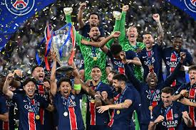

Le trio offensif du Paris Saint-Germain joue un rôle très important en 2025. L’attaque est essentielle pour gagner les matchs. Ces trois joueurs doivent marquer des buts et créer des occasions. Ils participent aussi à la construction du jeu. Leur entente sur le terrain est très importante.

Pendant les matchs, le trio offensif bouge beaucoup. Les joueurs se déplacent pour gêner la défense adverse. Ils cherchent des espaces pour attaquer. Ils communiquent entre eux et font des passes rapides. Cela permet au PSG de jouer plus vite et plus fort.
Ousmane Dembélé apporte son expérience à l’équipe. Il aide ses coéquipiers et montre l’exemple. Il est souvent dangereux grâce à sa vitesse. Les défenseurs ont du mal à l’arrêter. Il joue un rôle important dans les attaques du PSG.
Bradley Barcola apporte beaucoup d’énergie. Il fait de nombreux efforts pendant le match. Il participe à la défense et à l’attaque. Il progresse beaucoup et gagne en confiance. Il devient un joueur clé du collectif.
Désiré Doué apporte de la créativité. Il ose tenter des actions difficiles. Il surprend souvent les adversaires. Il représente l’avenir du club. Son rôle devient de plus en plus important.
Grâce à ce trio offensif, le PSG peut dominer ses adversaires. L’équipe marque plus de buts et crée plus d’occasions. Le public apprécie le jeu offensif. En 2025, ce trio est essentiel pour les objectifs du club.
Retour à la première page